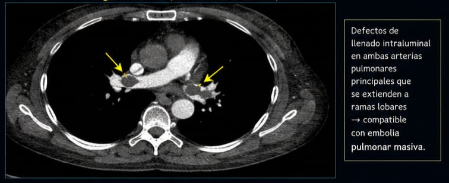

Radiología
Angio-TC de Tórax
Estudio de contraste para evaluación de lecho vascular pulmonar.
Instrucciones de examen
Pase el cursor sobre la imagen para realizar un zoom dinámico sobre los defectos de llenado.
CONTRASTE: FASE ARTERIAL
